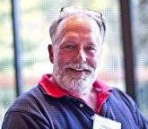
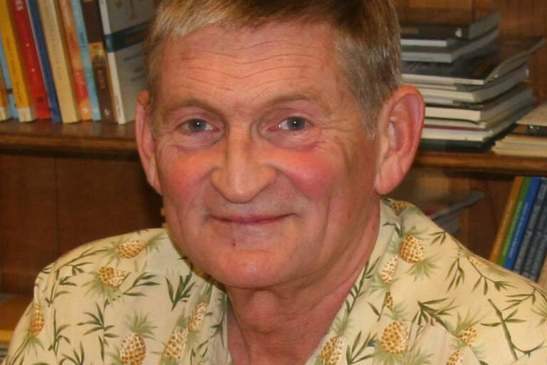
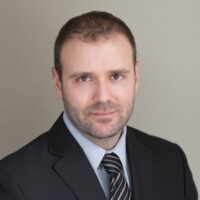

Researchers from neuroscience, psychiatry, computer science, and physics — united by curiosity about the brain's hidden rhythms and their impact on human health.
Multi-PI leadership team, project leads, support core directors, and co-investigators across 15 partner institutions.

Dr. Schroeder has spent his career studying how the brain's rhythmic activity shapes perception and cognition. He directs the Conte Center and leads Project 3, using tiny electrode arrays in non-human primates to uncover the cellular machinery behind slow brain rhythms. His lab asks: what physical processes inside brain circuits generate these slow waves, and how do they coordinate thought and attention across the whole brain?
Systems neuroscientist specializing in laminar electrophysiology in awake NHPs, active sensing, oscillatory dynamics, and multiscale physiology of brain network fluctuations. Directs the Translational Neuroscience Lab Division at NKI. Contact PI for the Conte Center; leads Project 3 (NHP multiscale physiology and causal mechanisms) and Core A (administrative/technical support). Co-PI on BRAIN R01 (MH111439) with Milham. PhD, Psychology, 1984, UNC Greensboro.
Dr. Milham is one of the leading advocates for open neuroscience — the idea that brain data should be freely shared so all scientists can benefit. He leads our human brain scanning program (Project 1), where volunteers undergo simultaneous MRI and EEG recordings across a wide range of tasks. He also helped build some of the most widely used open brain imaging datasets in the world.
Cognitive neuroscientist focused on large-scale neuroimaging, connectomics, and open science infrastructure. PI of the NKI-Rockland Sample and co-founder of the 1000 Functional Connectomes Project / INDI. Leads Project 1 (macroscale fMRI/EEG characterization of SBNFs) and provides oversight for Project 4 and Cores B and C. Highly Cited Researcher (Clarivate, 2014–2021); 2020 OHBM Open Science Award. PhD, Cognitive Neuroscience; MD, 2002/2004, Univ. Illinois Urbana-Champaign.

Dr. Knight's lab works with epilepsy patients who have electrodes placed directly on their brain's surface during medical care. With patients' consent, this provides unparalleled access to human brain activity. His team studies how slow brain rhythms influence when your attention drifts toward internal thoughts, and when it snaps back to focus on the outside world.
Pioneer in intracranial EEG research on human cognitive control and attention. Leads Project 2 (meso-microscale physiology via iEEG). Multi-site iEEG program spanning UCSF, UC Irvine, UC Davis, UPitt, WashU. Research focuses on DMN–FPCN interactions during internally vs. externally directed attention using BHA, SUA, PAC, and Granger causality. Collaborates with co-leaders Jack Lin (UC Davis), Avniel Ghuman (UPitt), and Stephan Bickel (Feinstein).
Dr. Jones builds detailed computer models of brain circuits — virtual brains that generate the same patterns of brain waves we see in real recordings. By tweaking the model and observing what changes, her team tests theories about what causes slow brain rhythms without needing an electrode. Their models also generate new predictions that guide animal and human experiments.
Computational neuroscientist specializing in biophysically realistic models of neocortical circuits to interpret human EEG/MEG. Developer of the Human Neocortical Neurosolver (HNN). Leads Project 4 (integrated network and cell-circuit models). Co-leads with John Murray (Yale) who focuses on large-scale network modeling. Aims to develop multi-scale hybrid models synthesizing empirical data from Projects 1–3 to test mechanistic hypotheses and guide experimental design.
Dr. Xu develops mathematical tools that allow scientists to compare brain data collected in different ways — across different species, imaging modalities, and individuals. Her work is the connective tissue of the whole center, making it possible to draw meaningful conclusions by combining data from all four projects.
Leads Core B (Multimodal Data Analysis & Integration). Pioneer in cross-species functional alignment frameworks (Xu et al., 2020, NeuroImage). Develops state-space frameworks for decomposing joint EEG/fMRI/physiological dynamics. Collaborates with co-leader Catie Chang (Vanderbilt) on multimodal alignment and arousal characterization.

Dr. Franco is the center's data librarian and infrastructure architect. He ensures every dataset generated by our 15-institution network is carefully quality-checked, standardized, and made openly available to scientists worldwide — following FAIR principles that are transforming how science is conducted.
Leads Core C (DASS-C — Data Aggregation, Standardization and Sharing). Implements FAIR data principles across all center projects. Develops data management infrastructure for QC, standardization, and open sharing via INDI/NKI infrastructure. Co-investigator: Eduardo Moreira (NKI). Background in neuroimaging informatics and large-scale open data initiatives (NKI-Rockland Sample, PRIME-DE).
We welcome applications from graduate students and postdoctoral researchers interested in brain rhythms, cognitive neuroscience, computational modeling, or open data science. Training opportunities are available across all partner institutions.
The Center actively supports trainee development across all projects. Opportunities exist for graduate students and postdoctoral fellows in systems neurophysiology (NHP laminar electrophysiology), human neuroimaging (fMRI/EEG), iEEG cognitive neuroscience, computational/biophysical modeling, and data science / open neuroimaging infrastructure.
We recruit healthy adult volunteers for brain imaging (MRI) and EEG studies at the Nathan Kline Institute in Orangeburg, NY. Participation is voluntary, confidential, and compensated. Studies take 1–3 hours.
Project 1 (NKI) is actively recruiting healthy adults (18–60 years) for simultaneous fMRI/EEG + autonomic recording studies. Inclusion/exclusion criteria: no neurological or psychiatric diagnoses, no MRI contraindications, standard CBIN screening. Contact the NKI CBIN for protocols and IRB details.